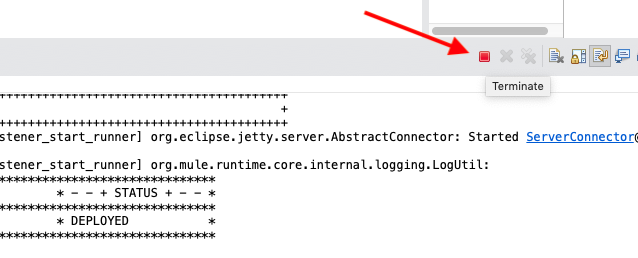

Last Updated: 2021-10-18
Overview
このガイドでは、Mule 4.x の Web Server Consumer コンポーネントに対して MUnit 2.3 のテストを設定する方法を説明します。その上で、Web サービスのレスポンスをモックするテストスイートを作成します。
What you'll build
本 CodeLab においては、簡単な SOAP Consumer API を作成します。この API に対して Mocking 機能を利用した MUnit Test Suite を開発します。
What you'll learn
- MUnit Test Suite の作成方法
- Mocking 機能を利用したスタブの自動生成
What you'll need
- Anypoint Studio 7.5.0 or later
- Example SOAP Web Service - Link
- MUnit 2.3 or later
- MUnit Anypoint Studio Plugin 2.5.0 or later
- Mule Runtime Engine 4.3.0 or later
Anypoint Studio の起動
Studioを開き Newメニューから Mule Project を作成
New Mule Project ウィンドウで, project name (e.g. munit-wsc)を入力, Runtime を選択 (複数表示されている場合は、最新バージョンを選択), その後 Finish ボタンを押下
HTTP Connector の設定
新しいプロジェクトが作成されると、真っ白なキャンバスが表示されます。
右側の Mule Palette で HTTP をクリックし、Listener をキャンバスにドラッグ＆ドロップします。
Mule Properties タブが開かない場合は、Listener アイコンをクリックし、緑色のプラス記号をクリックして、新しい Connector configuration を作成します。

General タブの Connection の項目で、ホストとポートを以下のように記入します。
Host | 0.0.0.0 |
Port | 8081 |
最後に「OK」をクリックします。
Listener のプロパティタブに戻り、Path フィールドに以下のように入力します。
/calc
Web Service Consumer Connector の設定
Mule Palette に戻って、Web Service Consumer Connector を追加する必要があります。
Add Modules をクリックします。
利用可能なコネクタのリストから、Drag and drop here to add to project というウィンドウにWeb Service Consumerをドラッグ＆ドロップします
モジュールのバージョンの選択を求めるダイアログウィンドウが表示された場合は、最新バージョン（執筆時点では 1.6.4）を選択します。最新バージョンがない場合は、Search in Exchange をクリックして Web Service Consumer を検索してください
Web Service Consumer の操作一覧から、Consume をキャンバスにドラッグ＆ドロップします。Listener モジュールの後に配置します。
Consume プロセッサーを選択して、Muleプロパティタブを開きます。Connector configuration フィールドの横にある緑色のプラス記号をクリックします
Wsdl の location フィールドに以下を貼り付けます。
http://www.dneonline.com/calculator.asmx?wsdl
Service、Port、Address は、WSDLファイルから自動的に解析されます。各フィールドのドロップダウンをクリックして、それぞれのデフォルトを選択する必要があります。
Service | Calculator |
Port | CalculatorSoap |
Address | http://www.dneonline.com/calculator.asmx |
OKをクリックしてウィンドウを閉じます。
Consume コンポーネントのMuleプロパティウィンドウで、Operation フィールドのドロップダウンを選択し、Add を選択します。
次のセクションでは、DataWeaveを使ってSOAPリクエストを作成し、レスポンスをフォーマットします。
DataWeave を使った SOAP リクエストの作成
Web Service Consumer Connector が使用する予定の SOAP エンドポイントが WSDL で構成されているので、渡す SOAP リクエストを設定する必要があります。
Mule Palette で Transform Message コンポーネントを見つけて、キャンバス内の Listener と Consume モジュールの間にドラッグ＆ドロップします。
また、Consume モジュールの後に別のコンポーネントをドラッグ＆ドロップすると、スクリーンショットのようになります。
最初の Transform Message component タブでは、コンポーネントが出力に関するメタデータを提供している様子が確認できます。

メッセージに修正を加えてみましょう。
ノードで intA をダブルクリックします。
DataWeaveのスクリプトがどのように生成されるかに注目してください。null を "10"に変更します。
intB についても同様です。null を "20" に変更します。
最終的なDataWeaveは以下のようになります。また、このスクリプトをコピーしてスタジオに貼り付けることもできます：
%dw 2.0
output application/xml
ns ns0 http://tempuri.org/
---
{
ns0#Add: {
ns0#intA: 10,
ns0#intB: 20
}
}2つ目の Transform Message コンポーネントには、以下のDataWeaveスクリプトを貼り付けます:
%dw 2.0
output application/json
ns ns0 http://tempuri.org/
---
{
result: payload.body.ns0#AddResponse.ns0#AddResult default 0
}このスクリプトは、結果を抽出して、JSON形式でデータを返します。
Wait until the application is deployed on your local machine.

Open up your browser and enter http://localhost:8081/calc in the URL bar.
Make sure the API returns the result of 10 + 20 which is 30.

Stop the application by hitting the terminate button.

プロジェクト実行
次のステップは、構築したフローをテストします。 Package Explorer で、キャンバスを右クリックして、Run project munit-ws を選択します。
Console タブが表示されるはずです。ステータスが DEPLOYED と表示されるのを待って、次のステップに進みます。
それでは、実際にフローを試してみましょう。Google Chromeに切り替えて、以下のURLを入力します。
http://localhost:8081/calc
すべてが正しく設定されていれば、下のような画面が表示されるはずです。
スケルトンの MUnit テストスイートの作成
スタジオに戻って、Munit テストスイート を作成しましょう。
フローを選択して右クリックします。MUnit > Create blank test for this flow を選択します。
src/test/munit の下に munit-wsc-test-suite.xml という新しいファイルが作成され、Test フローと、テストするフローへのフロー参照が追加されます。
Mock のセットアップ
モックをセットアップする前に、期待するモックされたメッセージをセットアップする必要があります。
src/test/resources フォルダを右クリックし、New > File を選択します。
New File ダイアログで、ファイル名を output.xml と入力し、Finish をクリックします。

作成したファイルの Source タブを選択し、以下のXMLを貼り付けます:
<?xml version="1.0" encoding="UTF-8"?>
<AddResponse xmlns="http://tempuri.org/" xmlns:xsd="http://www.w3.org/2001/XMLSchema" xmlns:xsi="http://www.w3.org/2001/XMLSchema-instance">
<AddResult>20</AddResult>
</AddResponse>次に、テストフローの動作を設定しましょう。Mule Palette で MUnit Tools を選択し、Mock when コンポーネントをクリックしてテストフローにドラッグします。フローの Behavior セクションにドロップします。
Mock when のプロパティで、"Processor "フィールドの横にある "Pick processor" ボタンをクリックします。
Consume を選択し、表示されたウィンドウで operation Add をチェックします。OKボタンを押します。
スクロールダウンして、PayloadセクションのValueフィールドに以下をペーストします:
#[
{
body: readUrl('classpath://output.xml','application/xml')
}
]Media type の設定:
application/java
次に Assert that を追加したいと思います。Assert that イベントプロセッサは、Mule Event のコンテンツの状態を検証するためにアサーションを実行することができます。
Mule Palette から Assert that コンポーネントをフローの Validation セクションにドラッグ＆ドロップします。
Assert that コンポーネントのプロパティウィンドウに次のように入力します。
Expression（fx ボタンを押して式モードを有効にしてから入力してください）:
payload.result
to:
MunitTools::equalTo("20")
to: MUnit Matchers はDataWeaveの関数群で、特定の値ではなく式の中の任意の値に対するアサーション条件を定義します。

次のセクションでは、MUnit スイートを実行して、テストの結果を確認します。スタジオ・コンソールには、フローの出力が表示されます。さらに、MUnit 用のビューがあり、結果、エラー、メッセージ、カバレッジ・レポートが表示されます。
テストスイートの実行
テストの設定が完了したので、テスト・スイートを実行して合格するかどうか確認してみましょう。
フローの上で右クリックし、Run MUnit suite を選択します。
テスト実行結果の確認
すべてが正しく設定されていれば、Console にテストが成功したことが表示されます。
さらに、MUnit タブには、エラーや失敗がゼロで実行が成功したことが表示されます。
MUnit Coverage タブで Generate Report をクリックします。
MUnit Coverage Report が生成され、テストの全体的なカバレッジの概要が表示されます。
最後に、Muleのフローに戻ると、各プロセッサの横に緑色のチェックマークが表示され、MUnitテストがカバーしていた内容を示しています。
MUnit は Mule アプリケーションのテストフレームワークで、統合機能や API の自動テストを簡単に構築できます。統合テストやユニットテストの機能が充実しており、イベントプロセッサなどのエンドポイントが定義された名前や属性にマッチした場合にモックする機能などがあります。
What's next?
MUnit 関連の他シリーズも是非お試しください。